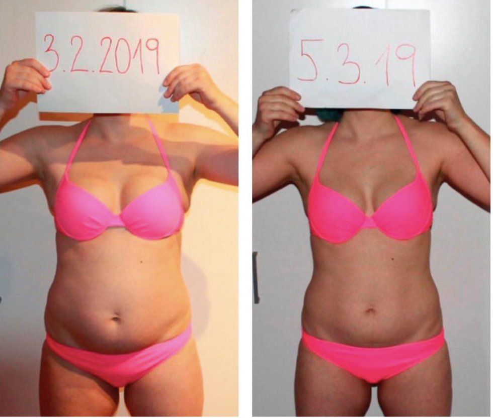
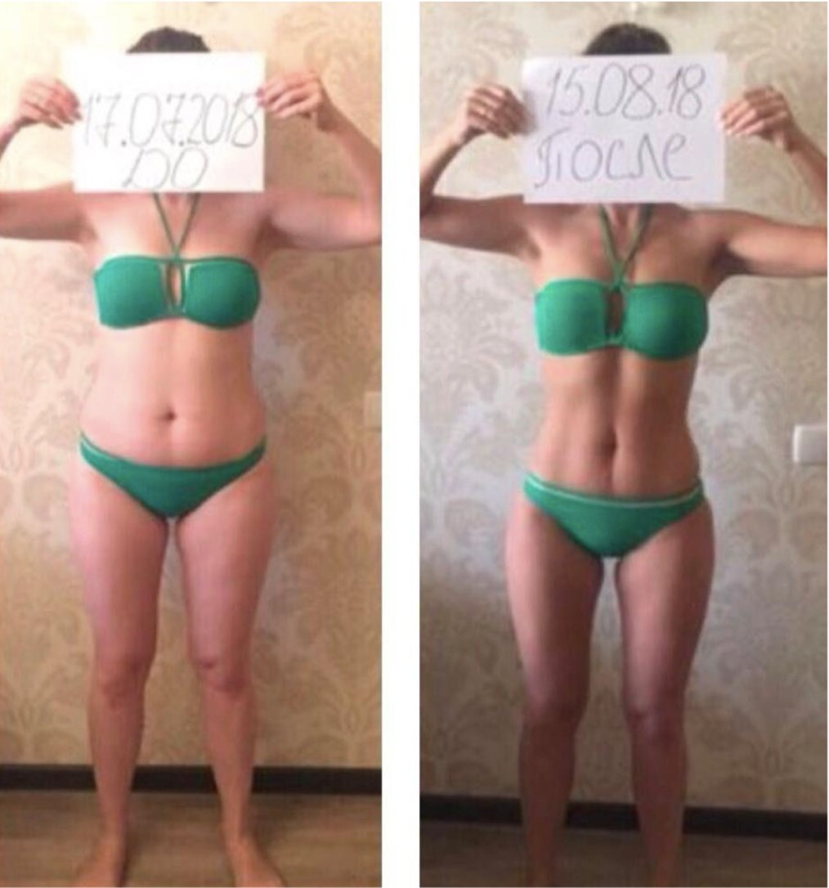
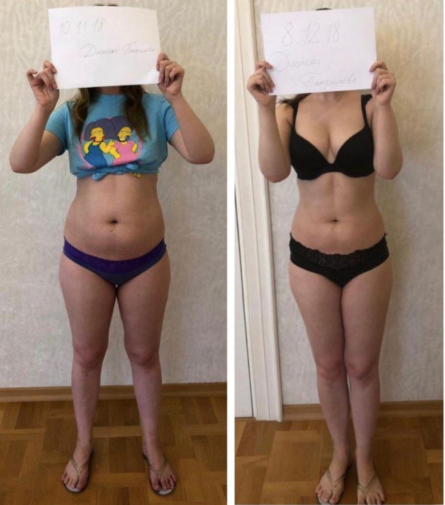
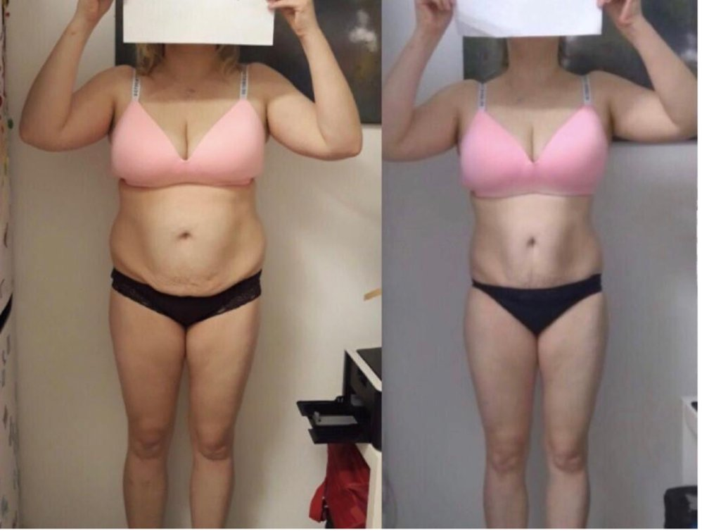
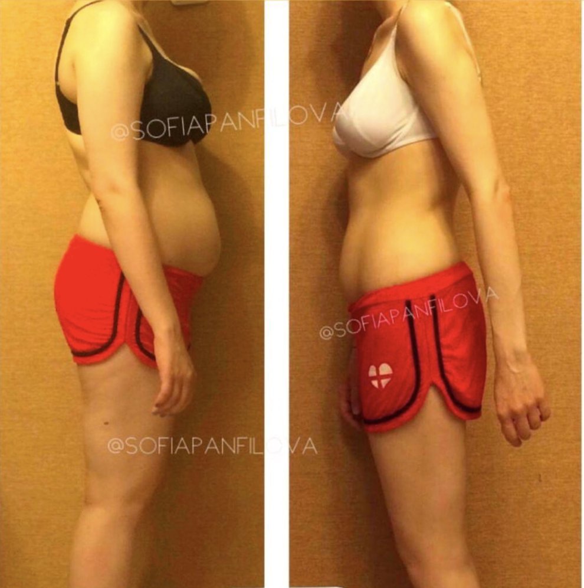
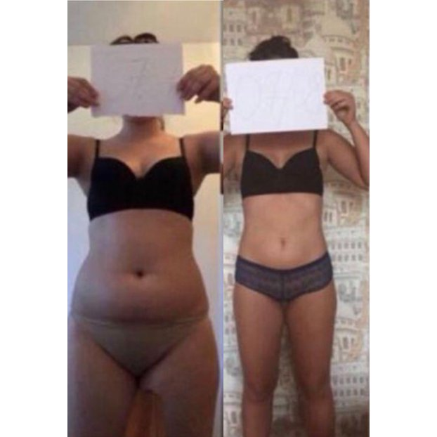
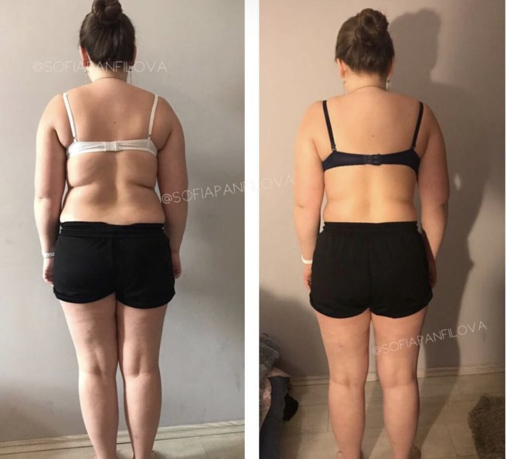
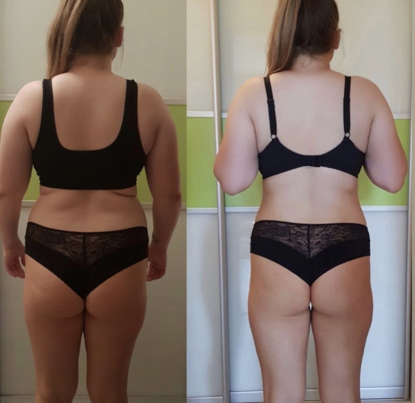

РЕЗУЛЬТАТЫ КЛИЕНТОВ
Реальные результаты клиентов, которые перестали бороться с симптомами и начали понимать своё тело.
Записаться на консультациюМЕТРИКИ
Средние показатели по результатам программ нутриционного сопровождения (8-16 недель).
ОТЗЫВЫ
Три года я слышала «всё у вас в норме». София посмотрела те же анализы и за 20 минут показала, почему я не могу похудеть и почему сплю по 5 часов. Магия? Думаю, клинический опыт!
Я так устала от противоречивых советов в мамских чатах. Один пост — «ешьте печень», другой — «печень опасна при беременности». София дала мне план по неделям, с конкретными продуктами, дозировками, альтернативами. Тревога ушла. Я впервые наслаждалась беременностью.
Мне 53, и я впервые чувствую, что кто-то понимает мой организм. Не «ешьте меньше», не «больше двигайтесь». А конкретно: вот ваш гормональный фон, вот что с ним делает ваш рацион, вот что менять. За 3 месяца я вернула сон и перестала бояться весов.
На Оземпике у меня пропал аппетит, но и силы пропали. София буквально пересобрала моё питание по граммам и микроэлементам. Через месяц я снова могла нормально тренироваться.
Я пришла без жалоб — просто хотела понять, как мой организм реагирует на еду. CGM-мониторинг открыл мне глаза: моя «полезная» овсянка давала скачок сахара выше, чем шоколад. Теперь я ем по данным, а не по шаблонам из интернета.
Я работаю с Софией уже год. Начинала с разовой консультации, потом прошла 8-недельную программу, теперь в Health as a Project. Каждый этап — новый уровень понимания своего тела. Спасибо!
ВИЗУАЛЬНЫЕ РЕЗУЛЬТАТЫ
Реальные результаты клиентов. Фотографии публикуются с согласия.








ИСТОРИИ ТРАНСФОРМАЦИЙ
Анонимные истории клиентов с реальными результатами.
«Впервые за два года я просыпаюсь без усталости»
Хроническая усталость, +7 кг за полтора года при стабильном питании. Три диетолога до этого — результата не было. Стандартные анализы «в норме».
Ферритин 18 нг/мл при «нормальном» гемоглобине. Инсулинорезистентность на ранней стадии. Дефицит витамина D — 14 нг/мл.
За 8 недель: −4.2 кг, ферритин 62 нг/мл, витамин D — 48 нг/мл. Энергия с 3/10 до 8/10. Прекратились дневные провалы в 15:00.
«Гинеколог назначил ЗГТ и сказал ешьте здоровую еду. София объяснила — что именно.»
Менопауза, ЗГТ 6 месяцев. Жир перераспределился на живот, приливы по 8-10 раз в день, потеря мышечной массы, бессонница. Ни один специалист не объяснил, как питаться на ЗГТ.
Критически низкий уровень белка в рационе (0.6 г/кг). Дефицит магния и B6. Хронический дефицит сна усиливал кортизол.
За 12 недель: приливы сократились до 1-2 в день. Сон нормализовался. Потеря жировой массы — 3.8 кг при сохранении мышечной. Впервые получила протокол, работающий вместе с ЗГТ, а не вопреки.
«Я боялась навредить ребёнку каждым приёмом пищи. София убрала тревогу и дала план.»
Первая беременность за границей. Токсикоз до 16 недели, страх гестационного диабета, путаница в рекомендациях из интернета. Местный врач посоветовал расслабиться и не переживать.
Дефицит железа на старте (ферритин 15 нг/мл). Неоптимальный уровень витамина D. Питание не покрывало потребности второго триместра.
Индивидуальный план по триместрам. Железо восстановлено. Набор веса в пределах нормы. Нет гестационного диабета. Спокойная, информированная беременность.
«Я потеряла 14 кг на Оземпике, но теряла и мышцы. София остановила это.»
На GLP-1 (Ozempic) 5 месяцев. Потеря 14 кг, но вместе с жиром уходят мышцы. Аппетит подавлен настолько, что ест 700 ккал в день. Слабость, дряблость, страх обратного набора.
Потребление белка — 28 г/день (при потребности 80+ г). Критический дефицит B12, цинка. Потеря тощей массы — 4.1 кг за 5 месяцев.
Протокол питания, адаптированный к сниженному аппетиту: приёмы малого объёма с высокой нутриентной плотностью. За 8 недель: белок стабильно 75+ г/день, потеря мышечной массы остановлена, B12 и цинк в норме.
«CGM показал, что мой «здоровый» завтрак вызывает скачок сахара до 9.2 ммоль/л»
Нет жалоб на здоровье. Хочет оптимизировать питание на основе данных, а не догадок. Интересует CGM-мониторинг и longevity-подход.
CGM выявил постпрандиальные скачки глюкозы до 9.2 ммоль/л после овсянки с фруктами. Вечерние углеводы переносились значительно лучше утренних.
Перестроен тайминг приёмов пищи. Средняя вариабельность глюкозы снизилась на 34%. Энергия стабильная в течение дня. Данные вместо догадок.
ПОДХОД
Каждая программа начинается с анализа лабораторных данных. Мы не угадываем — мы находим биохимические причины вашего состояния.
Нет двух одинаковых протоколов. Ваш план учитывает ваши анализы, образ жизни, цели, пищевые привычки и медицинскую историю.
Мы отслеживаем прогресс через объективные метрики: лабораторные показатели, состав тела, шкалы самочувствия. Не ощущения — а данные.
Запишитесь на диагностическую консультацию — и получите персональный разбор ваших анализов с конкретными рекомендациями.